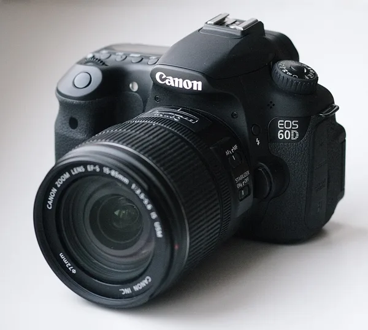
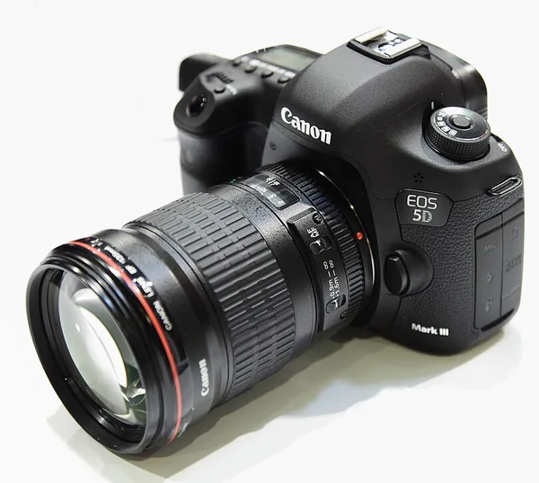
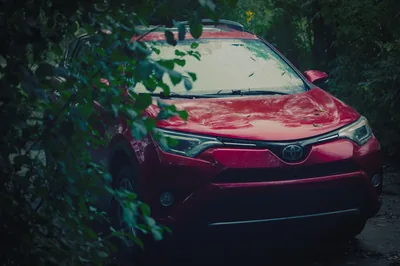

Photography · · 8 min read
The Inaccessibility of Photography
The gear treadmill makes photography look expensive, but my gallery was shot on a camera that now sells used from about a hundred dollars, and my phone.
Photograph © Ken Reid
The Inaccessibility of Photography
In 1900 Eastman Kodak brought out a box camera called the Brownie and sold it for one dollar, which is about $40 in today's money (the name came partly from Frank Brownell of Rochester, New York, who made them for Eastman).[1][2] A hundred thousand of them sold in the first year, and the Franklin Institute, which has one in its collection, says it "helped to put photography into the hands of amateurs".
A hundred and twenty-six years later, photography looks like a hobby for people with money. And, well, it largely is. If you go to any big sporting event and look at the journalist section you'll see a bunch of people with lenses about the size of my arm, and cost about 4x the price of my car. For one lens. Then if you look at discussion boards online, most of what I see is about gear: which body, which lens, which upgrade, what this year's model does that last year's didn't. It puts people off of a hobby that can actually be done with very little. You can take good photos on a camera that sells used for about a hundred dollars, or on the phone you already own, and edit them in software that costs nothing (except some time to learn).
Quick jargon guide
- Body: the camera itself, without a lens. Lenses are sold separately and swap between bodies of the same mount.
- DSLR: a digital single-lens reflex camera, the kind with a mirror that shows you the view through the lens. Generally refers to what people think of with regards to modern cameras.
- APS-C: a sensor size smaller than a frame of 35mm film, common in cheaper interchangeable-lens cameras.
- Raw file: the sensor's readings as recorded, before the camera turns them into a JPEG. More room to fix things when you edit.
- DNG: Adobe's "Digital Negative" open raw format; many phones save raw files as DNG.
- Open source: software whose code anyone can read, change and share, usually free to download.
- Non-destructive editing: the editor stores your changes as instructions and never alters the original file.
Musicians have a name for it
Gear Acquisition Syndrome, or GAS, is "the musicians' unrelenting urge to buy and own instruments and equipment as an anticipated catalyst of creative energy and bringer of happiness". That's from Jan-Peter Herbst and Jonas Menze, who wrote a whole book about it in 2021. They also write: "The urge is directed by the belief that acquiring another instrument will make one a better player."[3] With "camera" in place of "instrument", that describes a good chunk of photography YouTube and TikTok.
I've played guitar since I was about 11 and got into photography around 15. I get the urge to build up your gear library, who doesn't want new toys? It brings immediate satisfaction, fun, enjoyment, inspiration, while doing so with your existing gear is something of a chore before you actually enjoy it again. Plus - think of all the things new gear can do your current gear can't! But that is where creativity come into play, or sometimes, swallowing that urge and focusing on what your gear CAN do, putting new gear into the future. You'll enjoy your new gear even more with more skills and experience gained from your old gear.
My camera came out in 2010
Almost every photo in my gallery was shot on a Canon EOS 60D (though I think a couple linger from my old 350D, and a couple of phone shots are there, too). Canon announced it on 26 August 2010, an 18 megapixel APS-C DSLR with a screen that flips out, and it went on sale in the US at $1,099 for the body, or $1,399 with an 18-135mm kit lens.[4][5] That was a lot of money in 2010. This week the used camera shop MPB lists 60D bodies from $97 to $214.[6]
Canon has replaced it three times since, with the 70D, the 80D and then the 90D in August 2019, and Wikipedia now lists a mirrorless camera, the EOS R10, as the 90D's successor, and that's excluding the myriad of better series out there.[7][8] At my old workplace, I had the opportunity to use a Canon EOS 5D Mark III. Here's a brief comparison:[7][17]


| Spec | EOS 60D | EOS 5D Mark III |
|---|---|---|
| Announced | August 2010 | March 2012 |
| Launch price | $1,099 | $3,499 |
| Current price (used) | $97 to $214[6] | $154 to $579[18] |
| Sensor | 18 MP, APS-C | 22.3 MP, full frame |
| Autofocus points | 9 | 61 |
| Burst | 5.3 frames/s | 6 frames/s |
| ISO (expanded) | 100 to 6400 (12800) | 100 to 25600 (102400) |
| Screen | 3in, flips out | 3.2in, fixed |
| Cards | SD | CF + SD |
| Weight | 675 g | 860 g |
Prices and weights are for the body alone, without a lens.
The gallery has ~500 photos in it, about a decade of self-taught landscapes, urban decay and pets, and I'm happy with them. I'm sure that a fancier camera and lens would have improved the shots, sure, but the grass is always greener. The 60D doesn't even have GPS, so I've been putting the photo map together by hand. It shoots 5.3 frames a second and tops out at ISO 6400 (12800 if you push it), which is plenty for a hill at sunset or a patient dog, and not what I'd take to a football match under floodlights (not that I'd go to a football match, anyhow).[7] Most of a landscape photo is being in the right place when the light is good and pointing the thing in a sensible direction. The lenses I have are nothing fancy. I make use of a kit lens and a cheap telephoto lens I got for around $100. The only thing I need is more time, not gear!

The camera you already have
Rise Above Research, who somehow came up with a number, estimate that around 1.95 trillion photos will be taken worldwide in 2026, with smartphones accounting for the vast majority.[9]
In 2009 the photographer Chase Jarvis published a book of pictures taken on his iPhone, a visual notebook of a year of his life, and called it The Best Camera Is The One That's With You.[10]
Editing for nothing
Snapseed is Google's photo editor for phones. The App Store listing promises "30+ pro tools and filters" with "no subscriptions, purchases, ads, or watermarks".[11] It edits raw files too: DNG files on Android, and on an iPhone or iPad raw files from a list of cameras that includes the 60D (and my old 350D).[12] Opening a raw file goes straight to the Develop tool, with exposure, shadows, highlights, contrast, structure, temperature and tint.
On a computer there's darktable, which calls itself "an open source photography workflow application and raw developer", free under the GPL, with builds for Windows, macOS and Linux.[13][14] Its editing is "fully non-destructive", so the original raw file is never changed and the full image is only worked out on export. Its camera support page lists the 60D with white balance presets and a noise profile.[15] RawTherapee is the other big free one, also GPL, also on all three systems.[16]
Sharing photos doesn't have to cost anything either. The full-size files for my gallery are hosted for free.
If you're starting out
This is what I'd tell a friend who wanted to get into photography and thought they couldn't afford it:
- Use your phone for a month first. Take far too many photos, delete most of them, as is tradition.
- Put Snapseed on it and edit the ones you keep.
- If you still want a camera with a viewfinder and lenses that come off, look at used bodies a few generations old, or borrow a friends. Check darktable's camera support page before you buy, so you know the raw files will open.
If this gets you out with an old camera or your phone, show me what you took in the comments, and tell me what it was shot on.
Common questions
Should I buy a 60D because you use one?
No. Buy whatever older body you can find cheaply in good condition with a lens you like, and check that your editor opens its raw files first. The 60D is only in this post because it's the one I have.
References
- The Franklin Institute. Kodak Brownie camera. Collections (accessed September 2026). https://fi.edu/en/science-and-education/collection/kodak-brownie-camera
- $1 in 1900 is worth $39.88 today. CPI Inflation Calculator, Official Data Foundation, based on US Bureau of Labor Statistics data (accessed September 2026). https://www.officialdata.org/us/inflation/1900?amount=1
- Herbst, J.-P., & Menze, J. (2021). Gear Acquisition Syndrome: Consumption of instruments and technology in popular music. University of Huddersfield Press. https://doi.org/10.5920/GearAcquisition.fulltext
- Canon EOS 60D DSLR announced and previewed. (2010, 26 August). DPReview. https://www.dpreview.com/articles/1692435631/canoneos60d/
- Miller, R. (2010, 26 August). Canon EOS 60D: 18 megapixels and 1080p video flexes its articulating screen this September. Engadget. https://www.engadget.com/2010-08-26-canon-eos-60d-18-megapixels-and-1080p-video-flexes-its-articula.html
- MPB. Used Canon EOS 60D (accessed 25 September 2026). https://www.mpb.com/en-us/product/canon-eos-60d
- Canon EOS 60D. Wikipedia (accessed September 2026). https://en.wikipedia.org/wiki/Canon_EOS_60D
- Canon EOS 90D. Wikipedia (accessed September 2026). https://en.wikipedia.org/wiki/Canon_EOS_90D
- Rise Above Research. (2026, February). 2026 worldwide image capture forecast: 2025–2030. https://riseaboveresearch.com/rar-reports/2026-worldwide-image-capture-forecast-2025-2030/
- Jarvis, C. (2009). The Best Camera Is The One That's With You: iPhone photography. New Riders. https://www.peachpit.com/store/best-camera-is-the-one-thats-with-you-iphone-photography-9780321684783
- Google LLC. Snapseed. App Store (accessed September 2026). https://apps.apple.com/us/app/snapseed/id439438619
- Google. Develop: RAW editing. Snapseed Help (accessed September 2026). https://support.google.com/snapseed/answer/6312515?hl=en
- darktable. About (accessed September 2026). https://www.darktable.org/about/
- darktable. Install (version 5.6.1, accessed September 2026). https://www.darktable.org/install/
- darktable. Camera support (accessed September 2026). https://www.darktable.org/resources/camera-support/
- RawTherapee (accessed September 2026). https://www.rawtherapee.com/
- Canon EOS 5D Mark III. Wikipedia (accessed September 2026). https://en.wikipedia.org/wiki/Canon_EOS_5D_Mark_III
- MPB. Used Canon EOS 5D Mark III (accessed 26 September 2026). https://www.mpb.com/en-us/product/canon-eos-5d-mark-iii